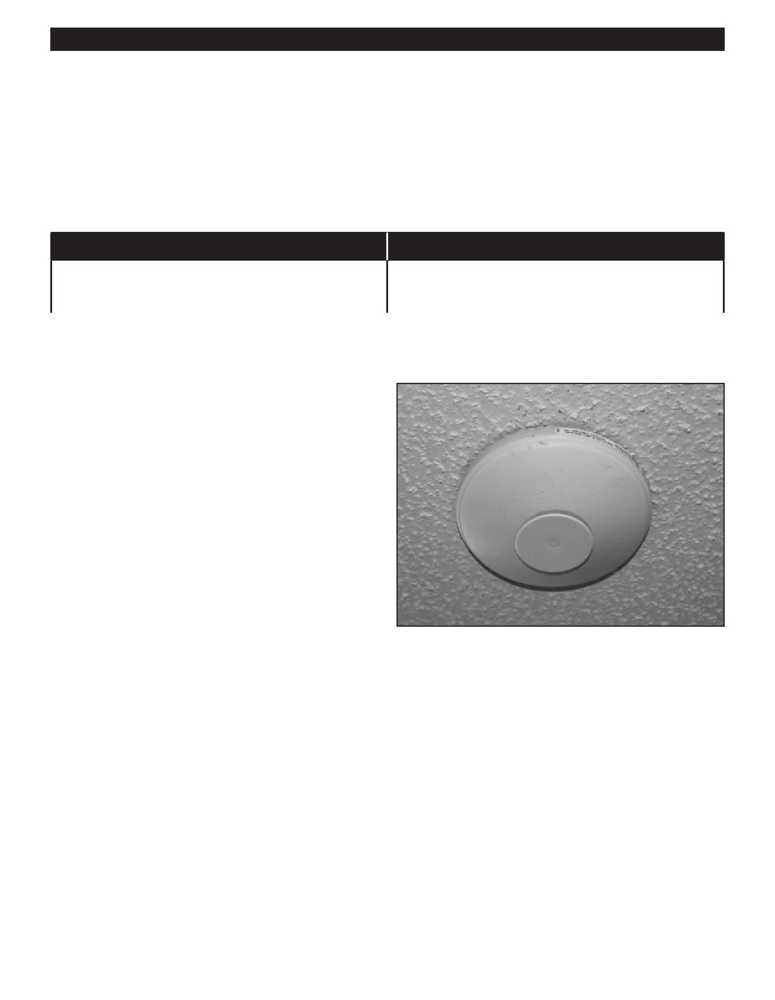

PA RT I C I PA N T R E S O U R C E G U I D E
Smoke Detectors and Carbon Monoxide Detectors
All apartment buildings are required by law to have working smoke detectors. Carbon
monoxide detectors are also required in many areas. In apartment buildings, these
devices are “hard wired” so that if one goes off they all go off. Some units combine smoke
and carbon monoxide detection functions.
Problem
Solution(s)
Detector does not sound when test is pressed.
Check wiring.
Replace detector. (See below.)
How to Replace a Smoke/
Carbon Monoxide Detector
1. Turn off the power.
2. Unscrew the detector from the ceiling.
3. Disconnect the wires.
4. Attach a detector with the same electrical ratings.
5. Restore power to circuit and press test button to make
sure it works.
6. Smoke detectors should NOT be tested using only the
test buttons as this only ensures the sounder and battery
are operating. To ensure proper operation a technician
should use a “smoke in a can“ type product. In this way,
the detector itself is tested.
Important: Test smoke and carbon monoxide
detectors regularly. These devices often have a
battery back-up. Replace battery at least once a year.
73